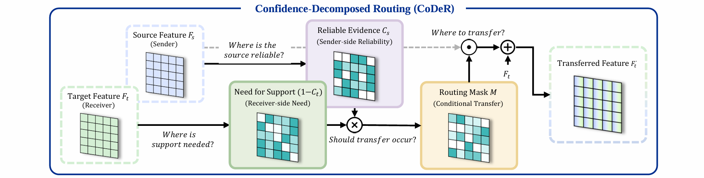
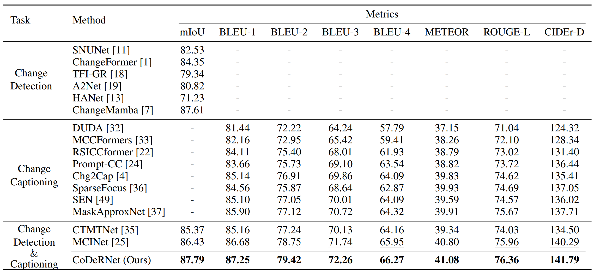
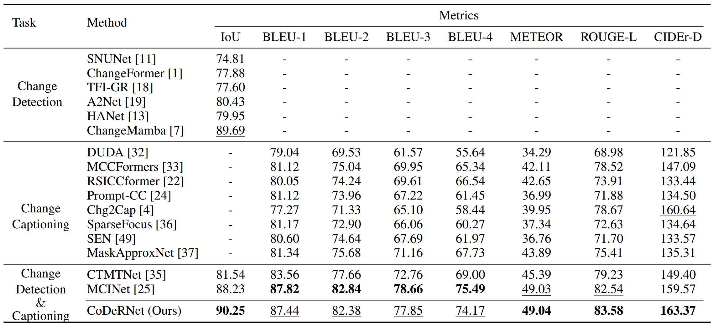
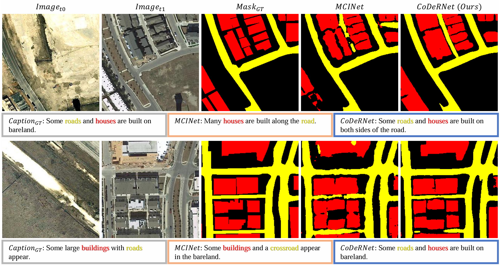

Abstract
Change detection and change captioning describe the same bi-temporal change in two forms, a pixel-level mask and a sentence. Although the two tasks are natural companions, naively sharing features between them does not guarantee a gain: features learned under pixel-level and sentence-level supervision are not complementary by themselves, and the key question is when and to whom information should be transferred.
We present CoDeRNet, a unified framework for joint change detection and change captioning on bi-temporal remote-sensing images. A shared change encoder produces multi-scale change features that are projected into two task-specific branches, and the branches exchange information through Confidence-Decomposed Routing (CoDeR). CoDeR decomposes the routing decision into a receiver-side cue that marks where the target branch needs support and a sender-side cue that marks where the source branch is reliable; their product gates a lightweight residual transfer. Routing is applied in both directions, caption → detection and detection → caption, before the task decoders, so both representations and both routing cues are optimized end-to-end by the two task losses.
On LEVIR-MCI and WHU-CDC, CoDeRNet improves change localization over the strongest prior unified framework with statistically significant margins and reaches competitive or better captioning quality, while ablations show that explicitly modeling receiver-side need and sender-side reliability outperforms conventional interaction mechanisms.
Confidence-Decomposed Routing
CoDeR decides, location by location, whether information from one task branch should be transferred into the other. Instead of a single interaction weight, the decision is decomposed into two learned confidence cues, one on each side of the transfer, and the transfer happens only where both agree.


Receiver side
Where is support needed?
A need-for-support map is estimated from the receiving branch. Regions where the receiver is already confident are protected from being overwritten.
Sender side
Where is the source reliable?
A reliability map is estimated from the sending branch. Only evidence the sender is confident about is allowed to travel.
Conditional transfer
Should transfer occur?
The routing mask combines need and reliability, and it gates a lightweight residual transfer of the source feature into the receiving branch.
Routing is applied in both directions, caption → detection and detection → caption, at designated feature levels before the task decoders. Complementarity is therefore defined operationally by the sender–receiver state rather than as an intrinsic property of a feature, and the detection and captioning representations, together with the routing cues, are optimized jointly through the two task losses without a separate post-hoc integration model.
Quantitative Results
Comparison with change detection methods, change captioning methods, and unified detection-and-captioning frameworks on the test splits of LEVIR-MCI and WHU-CDC. Bold marks the best score and underline the second best. The improvement in change localization over MCINet is statistically significant under paired bootstrap and McNemar tests on the same test images.




ConvNeXt-Base backbone, single GPU, batch size 64 (16 per step with 4-step gradient accumulation), Adam, learning rate 1e-4, 150 epochs. The checkpoints are available on Google Drive.
Qualitative Results


Code and Weights
The official PyTorch implementation, the LEVIR-MCI preprocessing script, and the evaluation code are released at github.com/cekkec/CoDeRNet. Training and evaluation of both datasets go through a single --dataset switch, and the paper hyperparameters are the defaults.
git clone https://github.com/cekkec/CoDeRNet.git && cd CoDeRNet
conda create -n codernet python=3.12 -y && conda activate codernet
pip install -r requirements.txt
# put levir_mci.pth / whu_cdc.pth from Google Drive under ./checkpoints/
python preprocess_levir_mci.py --captions_json <LEVIR_MCI_ROOT>/LevirCCcaptions.json --out_dir ./data/LEVIR_MCI
python test.py --dataset levir --data_folder <LEVIR_MCI_ROOT>/images --list_path ./data/LEVIR_MCI
python test.py --dataset whu --data_folder <WHU_CDC_ROOT>/images --caption_json <WHU_CDC_ROOT>/whuCCcaptions.jsonBibTeX
@inproceedings{cho2026codernet,
title = {CoDeRNet: Confidence-Decomposed Routing for Joint Change Detection and Change Captioning},
author = {Cho, Eunki and Kim, Hyeon Bae and Kim, Seong Tae},
booktitle = {Advances in Neural Information Processing Systems (NeurIPS)},
year = {2026}
}Acknowledgements
The data loading, the LEVIR-MCI preprocessing and the evaluation code are adapted from Change-Agent; the captioning scorers come from coco-caption. LEVIR-MCI is available on Hugging Face and WHU-CDC on Kaggle. The code is released under the MIT License.